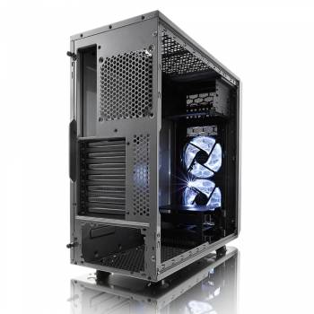
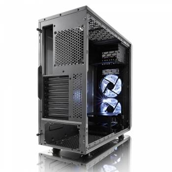

Корпус Fractal Design Focus G – неотъемлемая база Вашего компьютера, которая совмещает весь функционал системы в единый центр. Внутреннее пространство данной модели детально продумано, позволяя размещать необходимые элементы компактно без загромождения. Классика в черном цвете подойдет как для домашнего пользования, так и для нужд офиса.Корпус Fractal Design Focus G не только совмещает рабочие элементы, но и защищает их от перегрева, обеспечивая продолжительный срок службы. Достигается это с помощью своевременного и грамотного охлаждения. Помимо системы вентиляции с помощью кулеров и радиаторов, Вы можете по своему усмотрению организовать систему жидкостного охлаждения.
Размещение HDD: поперечное;
Расположение БП: нижнее;
Количество слотов расширения: 7;
Вес корпуса: 4.5;
Тип корпуса: Midi-Tower;
Материал корпуса: сталь;
Фронтальные аудио-разъемы: Да;
Фронтальные разъемы USB 2.0: 1;
Отсеки 3,5" внутренние: 2;
Отсеки 5,25" внешние: 2;
Форм-фактор материнской платы: ATX;
Максимальная длина видеокарты: 380;
Размеры корпуса: 205x444x464мм;
Цвет: черный;
Наличие блока питания: Отсутствует;
Число доп. вентиляторов 120мм: 6;
Гарантия (мес): 12;
Бренд: FRACTAL DESIGN;
Фронтальные разъемы USB 3.0: 1;
Отсеки 2,5" внутренние: 2;
Вентиляторы на передней панели: 2;
Размер фронтальных вентиляторов: 120мм;
Прозрачная боковая панель: ДА;
Число доп. вентиляторов 140мм: 4;
Конструкция корпуса в сборе достаточно крепкая, но если его разобрать, некоторые панели можно погнуть пальцами.Внимание!Товар подлежит обмену и возврату, только при наличии чека!
«Все права защищены».